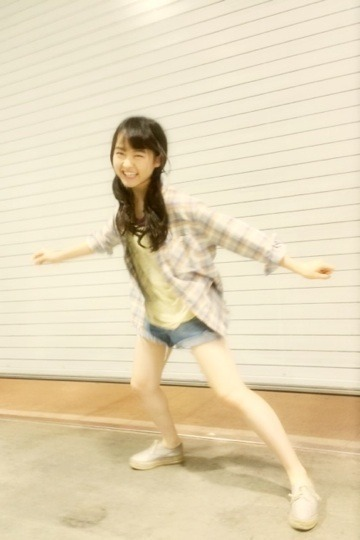
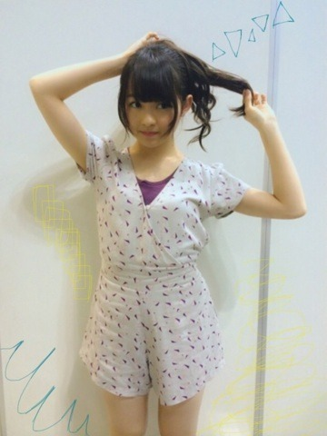
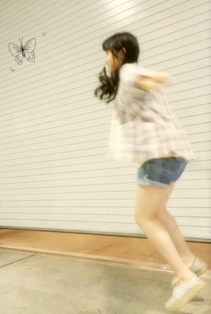

| 2014/05 07 Wed | 引きこもり女。569回目 |
パシフィコ横浜で個別握手会！
アンダーライブの感想
たくさんありがとうございました！
もっともっと頑張ろうって思えた。
私服

2部 ゆる巻ツイン
3部 ちょんまげみたいなやつ

チェックシャツ
used(Inpaichthys kerri)
Tシャツ RNA-N
デニムショーパン used
靴 GAIMO
田舎、
虫取り網を持って走りたい
4部 うしろでくるんとまとめたお団子
5部 ゆる巻ポニー

オールインワン ZURI
こういうオールインワンとか
つなぎがだいすきなの〜
握手会で何度も
この柄乃木坂じゃん
ってつっこまれて
...あ！
たしかに...(遅)
でも意識したわけじゃなくて(恥)
そうなの、そんなつもりじゃ(恥)
を繰り返したな。
もともと紫色は好きだから...
かわいいからいーのよ
絵のリクエストが多く、
とても嬉しい。
表紙を担当させていただいた
熊坂監督の小説が
中盤に入りました。
ぜひ読んでください！
今更ながらですが、
リクエストがあった
表紙の原画を載せる！

今描いてる絵、
完成したら載せるね
9thシングルの発売日
握手会で発表されたね！
7月9日！夏！
ああ、もう夏か〜
ガルルが懐かしいなあ

僕も飛ぶんだ...！
まりか
コメント(507)
2014/05/07 00:00